面向新兴市场内容电商卖家与内容团队的 AI 视频再版（Reframing）产品：将一条已拍摄完成的源视频，依据各分发平台的规则与语境，自动改写成 TikTok / Instagram Reels / YouTube Shorts / Kwai 四个可直接发布的版本，并将每次改写沉淀为可复用的平台规则资产。
| 版本 | 日期 | 修改人 | 修改说明 | 审批人 |
|---|---|---|---|---|
| V0.1 | 2026-09-14 | 产品负责人 | 市场调研结论版：赛道判断、目标市场选择、竞品扫描 | 业务负责人 |
| V0.5 | 2026-10-08 | 产品负责人 | 概念原型版：MVP 范围、13 屏可点击原型、规则引擎分层方案 | 业务负责人 |
| V0.9 | 2026-10-29 | 产品负责人 | 原型验证版：补齐状态机、RBAC、NFR、埋点与风险清单，提交研发评审 | 待评审 |
| 角色 | 职责范围 | 在本文档中的责任 |
|---|---|---|
| 产品负责人 | 需求与范围 | 本文档撰写与维护；MVP 边界与验收标准的最终解释人 |
| 研发负责人 | 架构与交付 | 评估第八章技术假设；对第六章集成依赖给出实现排期 |
| 测试负责人 | 质量 | 依据第五章验收标准（Given/When/Then）拆解测试用例 |
| 设计负责人 | 交互与视觉 | 维护原型（附录 A），确保与第五章交互逻辑一致 |
| 法务合规 | 合规审查 | 审定 2.5 节：LGPD/GDPR、音乐版权、平台条款遵循方案 |
| 安全负责人 | 安全与审计 | 审定 7.3 节：认证、加密、审计日志方案 |
| 术语 | 定义 |
|---|---|
| 再版 / Reframe | 不生成新画面，仅将已有视频按目标平台的规则与语境重新包装（钩子、字幕、音乐、封面、规格）的过程 |
| 货架 | 本文档对分发平台的称呼：TikTok、Reels、Shorts、Kwai 四个流量货架 |
| 规则引擎 | 存储并执行各平台改写规则的服务，分「官方层」（平台公开规范）与「用户层」（用户验证沉淀的私有规则） |
| 货架手册 | 用户层规则的可见集合，可编辑、可分享、可导出，是产品的核心资产 |
| 安全区 | 平台 UI（按钮、字幕条、订阅条）不遮挡的画面区域；跨平台交集约 720×960px（1080×1920 画布） |
| 钩子 / Hook | 视频前 3 秒用于阻止滑走的画面或文案 |
| 降级出片 | AI 流水线失败时，由本地规则模板生成可用但未经 AI 优化的保底版本 |
| Content ID | YouTube 的版权音频指纹系统；未授权音乐会触发声明并影响收益 |
| RTL | Right-to-Left，阿拉伯语等从右向左书写系统的排版方向 |
短视频电商正在从单一平台经营转向多平台经营，但内容生产的工具链没有跟上。创作者经济整体规模 2025 年约 2,500 亿美元，预计 2027 年接近翻倍至 4,800 亿美元（Goldman Sachs）；其中 84% 的创作者已在日常使用 AI 工具，但工具供给集中在「从零生成画面」，而不是「让已有内容跨平台生效」。
来源：TikTok Shop 全站点年报（2025）；Momentum Works / Tabcut（经 O Globo 2026-10）；快手国际化业务公开数据（2025-07）；Translated《Video Translation Price Guide 2026》。
痛点集中在三层：① 多平台分发的边际成本不为零——四个平台的安全区、音乐版权、字幕习惯、封面逻辑各不相同，手动改四个版本约需 40 分钟，热点生命周期却只有 4–5 小时；② 平台规则不透明且频繁变动——Meta 公布 Reels 安全区为画面上 14% / 下 35% / 两侧 6%，TikTok 与 Shorts 只给模板不给数字，且 YouTube 的 Content ID 会对未授权音乐直接声明；③ 经验无法沉淀——卖家在一次次失败中积累的平台知识，散落在社群与聊天记录里，没有任何工具将其变成可复用资产。不解决意味着：每条少发一个平台的视频，都是一次直接损失的出单机会。
| 目标（原型验证期 90 天） | 指标口径 |
|---|---|
| 北极星指标：每周完成「四平台全发」的视频数 | 同一源视频在四平台均完成导出的任务计数 |
| 改写流水线成功率 ≥ 92% | 进入「改写中」且最终产出四版的任务占比 |
| 降级兜底可用率 100% | AI 失败任务均能给出本地模板版，不出现死路 |
| 免费转付费 ≥ 4% | 90 天内订阅转化率（目标市场定价见 3.3） |
| 角色 | 画像与场景 | 权责边界 |
|---|---|---|
| 个体卖家（核心） | Lina，29 岁，圣保罗 TikTok Shop 饰品卖家。一人完成选品、拍摄、打包、客服；月发 8–20 条；热点窗口 4–5 小时，需要「拍完 10 分钟内四平台全发」。巴西市场此类个人账号占达人生态 88.25%（FastMoss 口径） | 创建项目、发起改写、编辑全部版本、导出、管理自己的货架手册 |
| 代理商运营（V1.5） | 跨境 MCN / 代运营公司的内容运营，一人服务 5–10 个卖家账号，需要批量改写与统一审阅标准 | 在工作区内批量处理；可编辑共享货架手册；无账单权限 |
| 品牌内容主管（V2.0） | 品牌方电商内容负责人，关心多市场素材的品牌一致性与合规留痕 | 审阅与批注（只读 + 评论）；导出审计记录；不直接发起改写 |
现有 AI 视频工具解决的是「语言翻译」或「画面生成」，没有产品解决「平台语境再版」：
| 产品 | 核心能力 | 语言数 | 定价（公开档） | 与 Reframe 的差异 |
|---|---|---|---|---|
| HeyGen | 数字人 + 视频翻译（唇形同步） | 175+ | $29/月起 | 翻译语言，不处理平台规则；面向讲解类视频 |
| Rask AI | 视频配音与字幕翻译 | 130+ | $60/月（25 分钟） | 按时长计费，小卖家月成本不可控；无平台语境改写 |
| Synthesia | AI 数字人视频生成 | 32+ | $29/月起 | 生成路线，不适用「真货实拍」的信任场景 |
| CapCut 等剪辑工具 | 通用剪辑 + 字幕识别 | — | 免费/低价 | 交付工具而非结果；不管平台规则与版权差异 |
| 批量导出工具 | 一键改尺寸分发 | — | $9–19/月 | 只改画布尺寸，不改钩子/语境/音乐版权 |
| Reframe | 平台语境再版 + 规则资产沉淀 | 4 平台 | 按改写次数分档 | 把每次改写学到的规则变成用户私有资产 |
核心优势排序：① 降本（一次改写替代 40 分钟人工 × 4 平台）；② 增效（热点窗口内完成全平台分发）；③ 数据沉淀（货架手册随使用增值，构成迁移成本）。
| 合规域 | 要求 | 产品设计响应 |
|---|---|---|
| 数据隐私 | 巴西 LGPD、欧盟 GDPR：用户视频与面部/声纹属个人数据 | 源视频默认 90 天自动删除；删除请求 72h 内完成；处理目的单独授权 |
| 音乐版权 | YouTube Content ID 声明、各平台商用曲库差异（TikTok 商业账号仅可用 Commercial Music Library） | 改写只选用各平台已授权曲库；版权状态在导出前显式标注 |
| 平台条款 | 竞品水印内容被限流（TikTok 水印在 Reels/Shorts 被抑制）；自动化发布受平台 API 条款约束 | 导入时剥离平台水印；MVP 不做自动发布，仅导出文件与排期提醒 |
| AI 内容标识 | 各市场陆续要求 AI 加工内容可标识 | 导出包内含改写清单（manifest），记录每处 AI 改动供平台申报 |
导入源视频 → 素材体检 → 选择平台（摊开规则） → AI 改写 → 四版输出 → 单版微调 → 导出/排期 → 规则沉淀。闭环的成功标准是：用户在一次会话内完成从素材到四个可发布版本的全部动作，并至少沉淀一条用户层规则。
| 不做项 | 原因与边界说明 | 状态 |
|---|---|---|
| AI 生成新画面 / 数字人口播 | 与「真货实拍」的信任前提冲突；避免与生成赛道正面竞争 | 不做 |
| 自动发布与多账号矩阵 | 平台 API 门槛与风控成本高；V1.0 只导出与排期提醒 | 不做 |
| 评论区运营 / 私信自动化 | 属于经营链路下游，非再版环节 | 不做 |
| 接入 Top 4 以外平台 | 规则引擎维护成本随平台数线性增长；先打穿质量 | V2.0 评估 |
| 多人协作工作区 | 个体卖家阶段无协作对象；仅提供审阅链接 | V1.5 规划 |
| 桌面端完整功能 | 拍摄与发布发生在手机；桌面端仅批量与审阅 | V1.5 规划 |
| 版本 | 里程碑 | 范围 | 退出条件（Exit Criteria） |
|---|---|---|---|
| V1.0 | MVP 原型验证 2026 Q4 | 四平台改写闭环、失败降级、货架手册（个人版）、排期导出；巴西葡语单市场 | 北极星指标与成功率达标（见 2.2）；50 名种子卖家完成 ≥3 次完整闭环 |
| V1.5 | 团队协作 2027 Q1 | 工作区与席位、代理商批量处理、印尼市场上线、桌面审阅端 | 团队席位付费占比 ≥ 15%；第二市场规则包复用率 ≥ 70% |
| V2.0 | 规则资产化 2027 Q3 | 货架手册分享/导入、48h 数据回流自动化、中东市场（阿语 RTL）、开放 API | 用户层规则平均复用 ≥ 5 次；API 接入代理商 ≥ 10 家 |
| V3.0 | 企业级扩展 2028 | SSO/SAML、审计日志 SLA、品牌合规审阅流、私有化规则库 | 企业合同 ≥ 5 份；安全合规审计通过 |
| 模块 \ 角色 | Owner （付费账户） | 编辑者 （V1.5 席位） | 审阅者 （外部链接） | 平台管理员 （系统侧） |
|---|---|---|---|---|
| 创建项目 / 导入素材 | ✔ | ✔ | — | — |
| 发起改写 / 消耗次数 | ✔ | ✔（计入 Owner 额度） | — | — |
| 编辑版本（钩子/字幕/封面） | ✔ | ✔ | — | — |
| 导出与排期 | ✔ | ✔ | — | — |
| 货架手册（用户层） | 读写/导出 | 读写 | 只读（如被分享） | — |
| 货架手册（官方层） | 只读 | 只读 | 只读 | 读写 + 灰度发布 |
| 成员与账单 | ✔ | — | — | 只读（客服场景） |
| 审计日志查看 | 本人操作 | 本人操作 | — | 全量（不可篡改） |
审阅者通过一次性签名链接访问，默认 72 小时过期，仅可查看四版对比与提交文字批注，不暴露源素材下载。
编号规则：FR-模块-序号；BR-业务规则。验收标准统一采用 Given/When/Then 格式，测试团队可直接拆解用例。原型阶段不定义 API 字段与数据表结构，仅定义输入、输出与系统行为。
| 依赖 | 用途 | 级别 | 降级方案 |
|---|---|---|---|
| ASR 转写服务 | 口播识别（pt-BR 优先） | 强依赖 | 转写失败 → 按纯画面逻辑改写，字幕留空待人工 |
| LLM 改写服务 | 钩子/文案改写 | 强依赖 | 超时 → 本地模板句库兜底（5.6 降级路径） |
| 对象存储 + CDN | 素材与产物分发 | 强依赖 | 双区域冗余；单区域故障切换只读导出 |
| 授权曲库服务 | 各平台版权音乐替换 | 弱依赖 | 曲库不可用 → 保留原声并标注版权风险，不替换 |
| 支付网关（Pix/卡） | 订阅与次数包 | 弱依赖 | 支付故障期间到期账户宽限 72h，功能不受影响 |
| 平台数据接口 | 48h 数据回流 | 弱依赖 | 接口受限 → 引导手动回填截图识别（OCR） |
源视频 →（上传，TLS）→ 临时存储（加密，90 天 TTL）→ ASR/视觉解析 → 改写任务（规则快照版本号随任务存档，保证可复现）→ 产物（四版 + manifest）→ 导出后进入 90 天归档 → 到期自动清除。数据回流仅采集用户授权的项目级指标，不采集受众个人数据。跨区域传输遵守 2.5 节数据出境约束。
| 埋点事件 | 维度 | 服务的核心指标 |
|---|---|---|
| project_created | 导入来源、素材时长、画质分 | 漏斗起点；素材质量分布 |
| rewrite_started / _succeeded / _failed | 平台组合、阶段、耗时、失败归因 | 成功率（≥92%）；阶段耗时 P95 |
| degraded_rendered | 触发原因、是否后续被精剪替换 | 降级可用率（100%）；兜底接受度 |
| rule_created / _applied / _revoked | 官方/用户层、平台、置信度 | 规则资产增速与复用次数 |
| export_completed | 版本数、是否排期、分辨率 | 北极星：四平台全发任务数 |
| reflow_submitted | 48h 各平台播放/完播/进店 | 钩子胜率；规则置信度更新依据 |
后台看板维度：按周（北极星、成功率、降级率）、按平台（规则命中率、失败归因分布）、按队列（流水线阶段耗时热力）。
| 指标 | 目标值 |
|---|---|
| 核心 API 响应（列表/详情/规则读取） | P95 < 300ms |
| App 首屏可交互（4G，中端 Android） | < 2.5s |
| 45 秒源视频四平台改写 | P95 ≤ 90s；硬超时 180s 转失败流程 |
| 并发改写任务（MVP 容量设计点） | 500 并发，排队等待 ≤ 2 分钟 |
核心链路 SLA 99.9%（月度不可用 ≤ 43 分钟）；RTO ≤ 1 小时，RPO ≤ 5 分钟。改写流水线无状态化，任务状态持久化于队列与对象存储，单节点故障自动重试；AI 依赖故障不视为系统故障，由 5.6 降级路径承接。
结构化日志（trace_id 贯穿客户端任务 ID 与服务端流水线）；核心指标：阶段耗时、失败归因分布、队列深度、降级率；告警阈值：改写成功率 5 分钟窗口 < 85% 触发值班告警，< 70% 自动开启降级模式（9.2）。
| 维度 | 要求 |
|---|---|
| 客户端 | iOS 15+ / Android 9+；Web 审阅端支持 Chrome、Safari 最近两个大版本 |
| 语言 | V1.0：pt-BR、en；V1.5：id-ID；V2.0：ar（完整 RTL 布局镜像，含数字与图标方向） |
| 时区与货币 | 排期一律按用户本地时区；定价本地化（BRL / USD），货币精度两位小数 |
| 无障碍 | 关键流程可旁白操作；字幕预览提供对比度合规样式（WCAG AA） |
数据保留：源视频与产物 90 天、项目元数据 2 年、审计日志 180 天；用户删除请求 72h 内完成并出具确认；巴西用户数据优先存储于南美区域；隐私政策明示 AI 处理目的，素材不用于模型训练（除非单独授权）。
| # | 高风险技术点 | 验证方式与通过标准 |
|---|---|---|
| 1 | 水印剥离后画质损失与平台识别规避 | 50 条样本，目检无可见损伤 ≥ 95% |
| 2 | 字幕安全区自动重排的稳定性（含 RTL 预研） | 四平台预览机检测 0 遮挡 |
| 3 | 版权音乐替换的节拍对齐与音量均衡 | 人耳盲测通过 ≥ 80% |
| 4 | 降级链路的端到端可用性（断 AI 出片） | 故障注入演练 100% 出片 |
| 风险 | 等级 | 应对（B 计划） |
|---|---|---|
| 平台规范频繁变动，规则维护成本侵蚀毛利 | 高 | 官方层规则配置化 + 变更监控爬虫；用户层规则分摊长尾场景 |
| 平台官方下场做一键多平台分发 | 高 | 差异化押注跨平台中立性 + 用户私有规则资产（平台不会替用户沉淀跨竞品规则） |
| 个体卖家付费能力低于预期 | 中 | 定价锚定「一条多出订单的利润」；次数包按需购买降低门槛 |
| 音乐版权曲库覆盖不足 | 中 | 弱依赖设计：保留原声 + 风险提示，替换为可选项 |
| AI 输出质量投诉归因错位（素材差怪 AI） | 中 | 体检前置暴露素材问题；失败归因到具体步骤与素材段 |
新用户默认装载四平台官方规则包（含安全区、音乐版权、字幕习惯、封面规范）与 3 条品类示例规则；首次导入赠送 1 次免费改写；新手引导只覆盖「导入 → 改写 → 导出」三步，不强制阅读教程。
| 开关 | 说明 |
|---|---|
| ai_pipeline_v2 | 新改写流水线灰度，按 5% → 25% → 100% 推进 |
| degraded_mode_global | 极端故障时一键切全量本地模板出片（保底可用） |
| platform_<name>_off | 单平台紧急下线（如某平台条款突变），其余平台不受影响 |
| ruleset_<version> | 官方规则包版本灰度，可单平台回滚 |
| 错误码 | 含义 | 用户侧话术与动作 |
|---|---|---|
| RF-1001 | 素材超限（时长/体积） | 明示上限与裁切建议，一键裁切 |
| RF-2013 | 改写阶段超时 | 归因到步骤，提供三出口（5.6） |
| RF-3002 | 曲库服务不可用 | 保留原声导出，标注版权风险 |
| RF-4001 | 导出包生成失败 | 自动重试 2 次后转工单，产物保留 72h |
帮助体系：App 内嵌帮助中心（葡语优先）+ 错误页一键附带 trace_id 报障；工单系统按错误码自动分类。
附录 A：可点击原型。原型为单文件 HTML（reframe/index.html），浏览器直接打开，无需登录；共 13 屏，覆盖正常流与失败降级流。控制台提供「自动演示」（约 2 分钟走查全流程）与「模拟 AI 超时」开关（演示 5.6 降级路径）。以下为界面索引（1/2）：
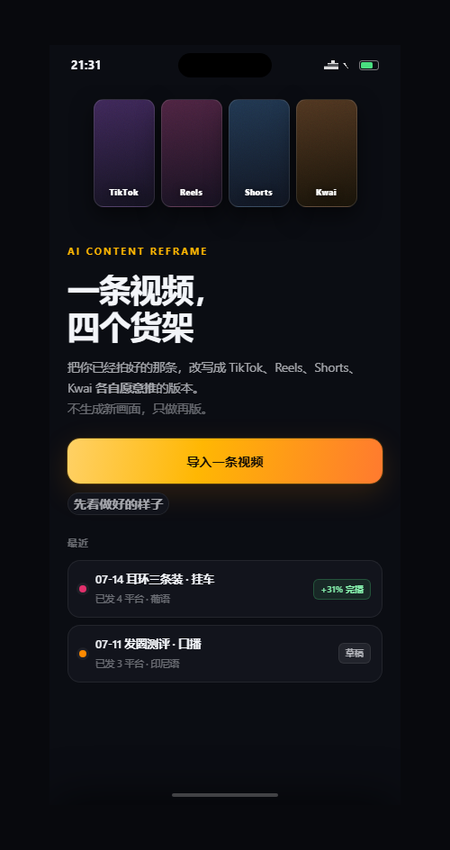
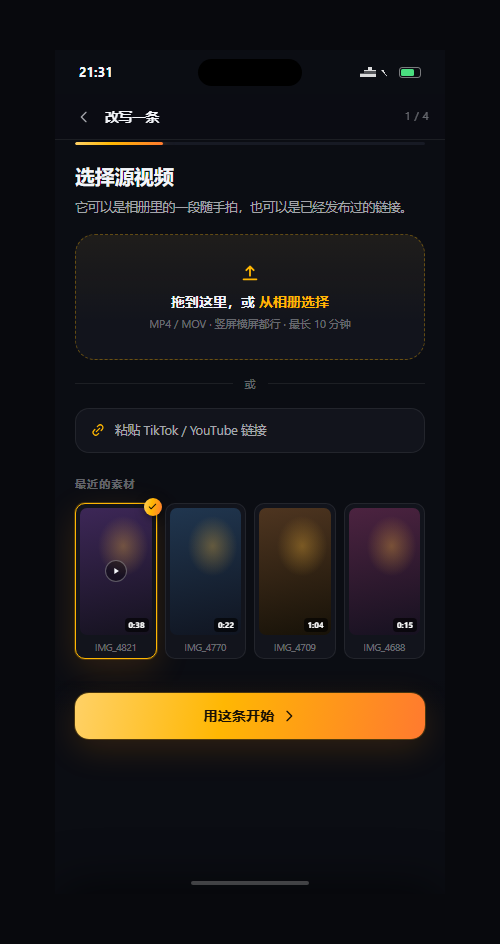
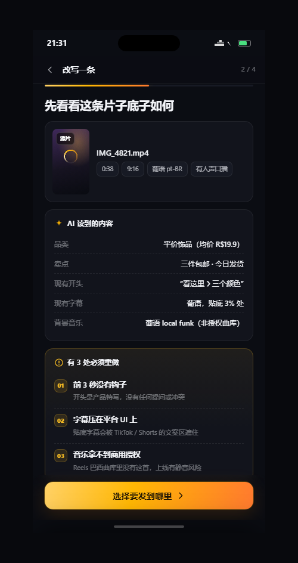
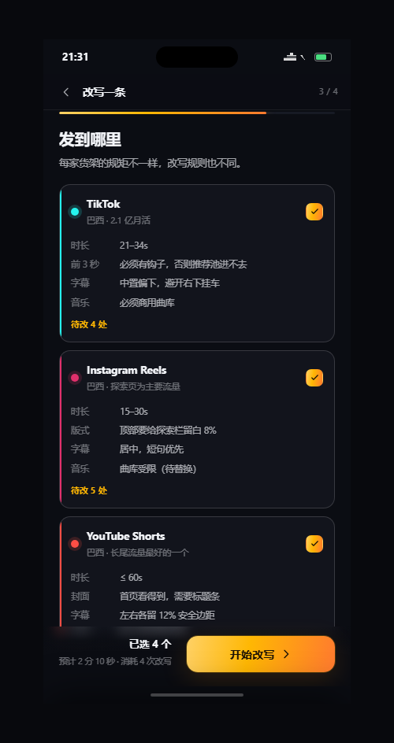
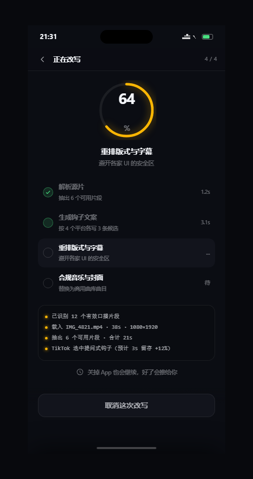
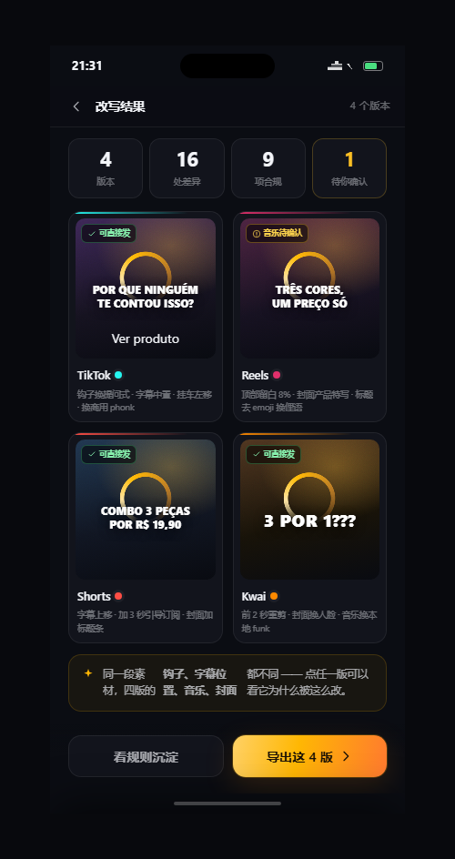
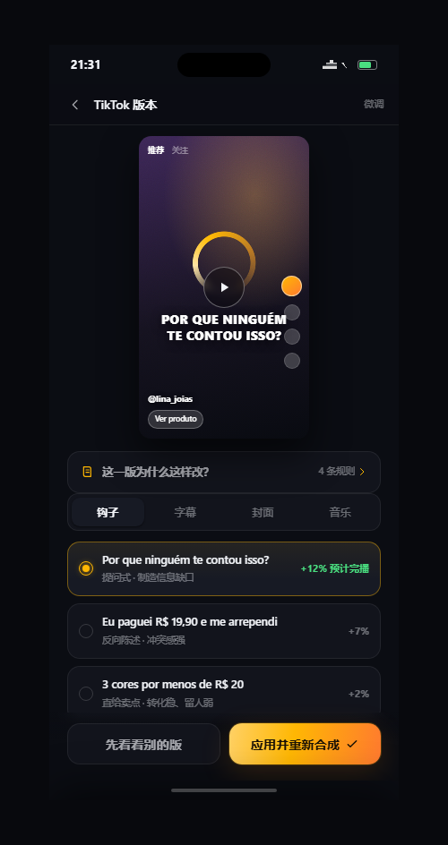
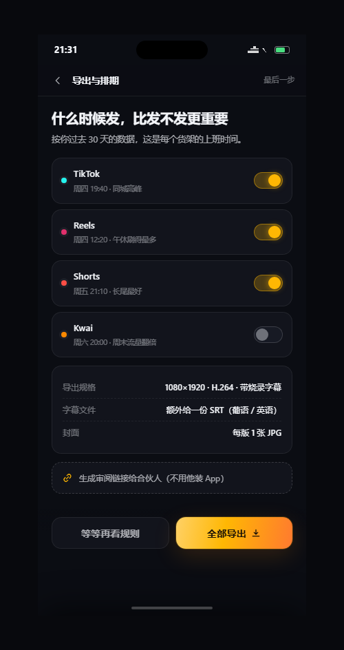
附录 A（续）：异常与资产界面索引（2/2）
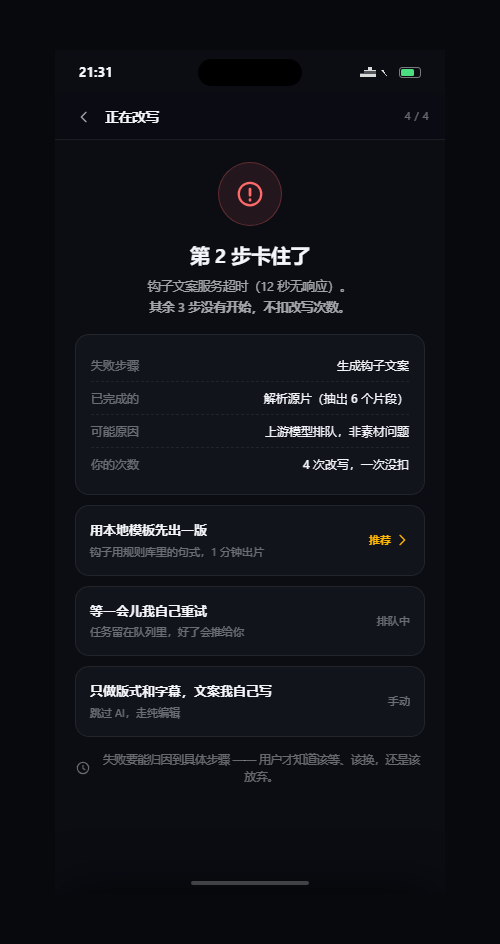
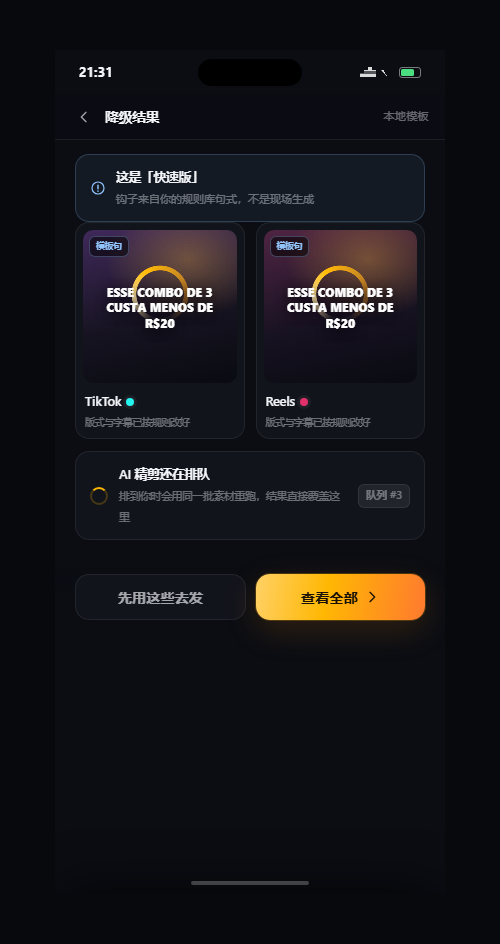
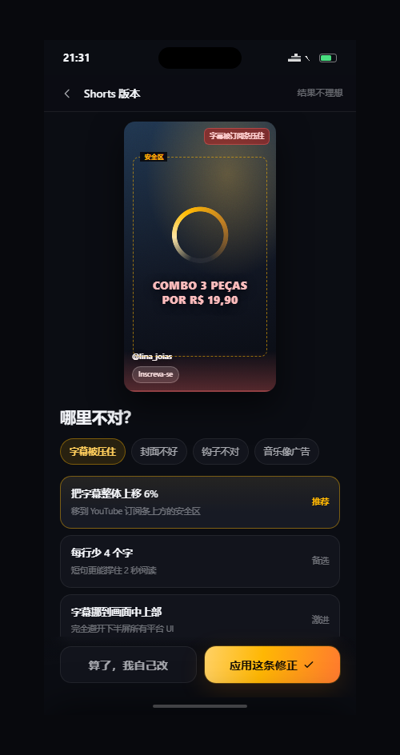
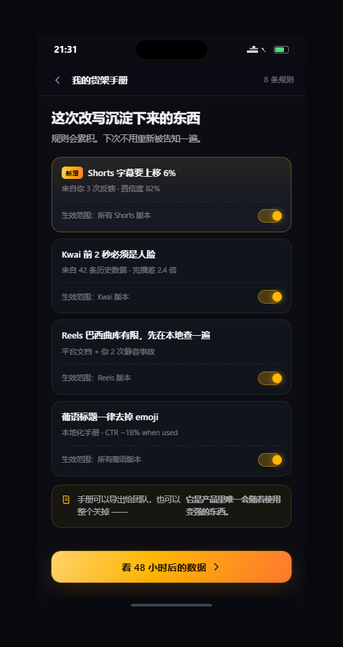
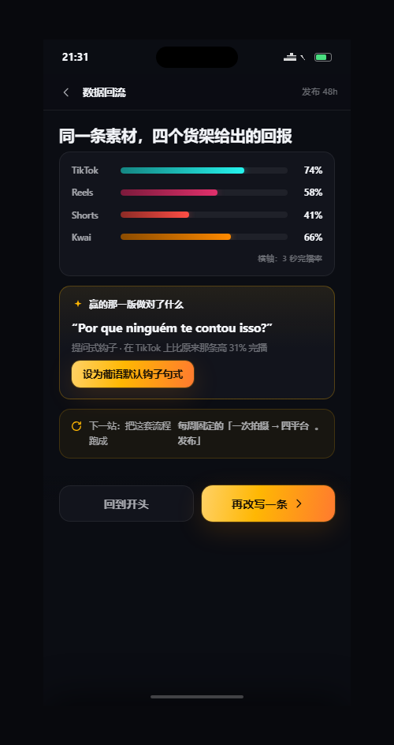
附录 B：原始需求池（本期未纳入，留存评估）
| 需求 | 来源 | 处置 |
|---|---|---|
| 直播间切片自动再版 | 代理商访谈 | V2.0 评估 |
| 货架手册市场（规则包交易/订阅） | 内部脑暴 | V2.0 评估 |
| 竞品账号改写策略监测 | 卖家社群 | 搁置（合规风险待评估） |
| AI 脚本生成（拍摄前） | 卖家社群 | 搁置（与「再版」定位冲突） |
| WhatsApp 发货提醒联动 | 巴西卖家访谈 | 搁置（非再版链路） |